四种协议
FTP / FTPS / SFTP / SCP 客户端，连接 NAS、路由器、电脑或任意服务器，浏览、上传、下载。
LanLink 是一款纯局域网的 Android 文件传输工具：FTP / FTPS / SFTP / SCP 四种协议、手机一键开服务器、快速传文件、网络工具与一键组网。无需登录、不上传云端、不收集数据。
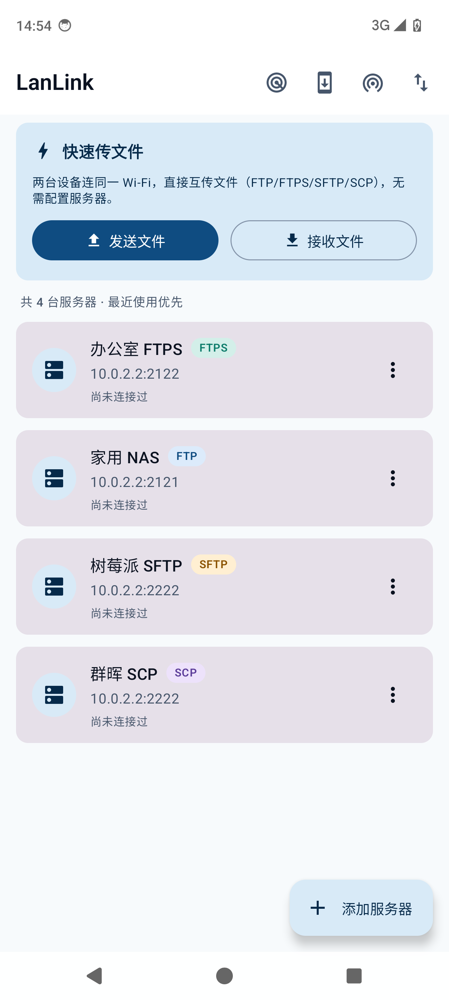
FEATURES
不只是一个传文件工具，而是把同网设备连接起来的一整套小工具。
FTP / FTPS / SFTP / SCP 客户端，连接 NAS、路由器、电脑或任意服务器，浏览、上传、下载。
App 内一键启动 FTP / FTPS / SFTP / SCP 服务端，电脑或其他手机用任意客户端访问共享目录。
两台手机同一 Wi-Fi，输入 8 位接收码或扫码即可互传；支持文件夹、断点续传、收到文件自动保留。
局域网设备雷达 + 网络诊断：同网段、网关可达、AP 隔离提示、IP:端口测试，快速定位「为什么连不上」。
没有路由器或 AP 隔离？A 开热点生成二维码，B 扫码自动加入，再直接传文件。
在 App 内检查并下载新版本，校验 SHA-256 与签名；GitHub 访问不便时可用蓝奏云兜底。
大文件中断后从断点继续；支持远端文件夹递归下载、本地目录递归上传，保留目录结构。
界面文案完整中英文；系统语言为英文时自动切换，动态提示后续逐步完善。
SCREENSHOTS
全部截图来自真实运行的 App。
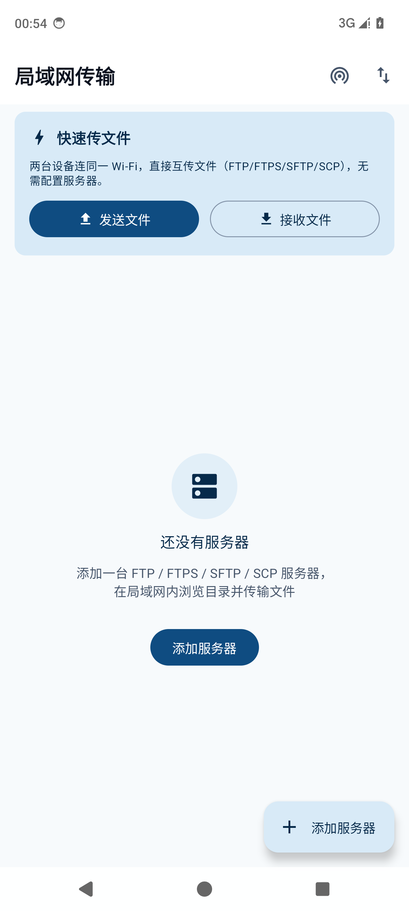
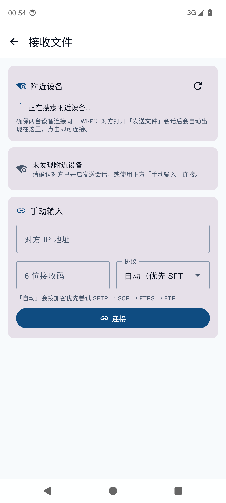
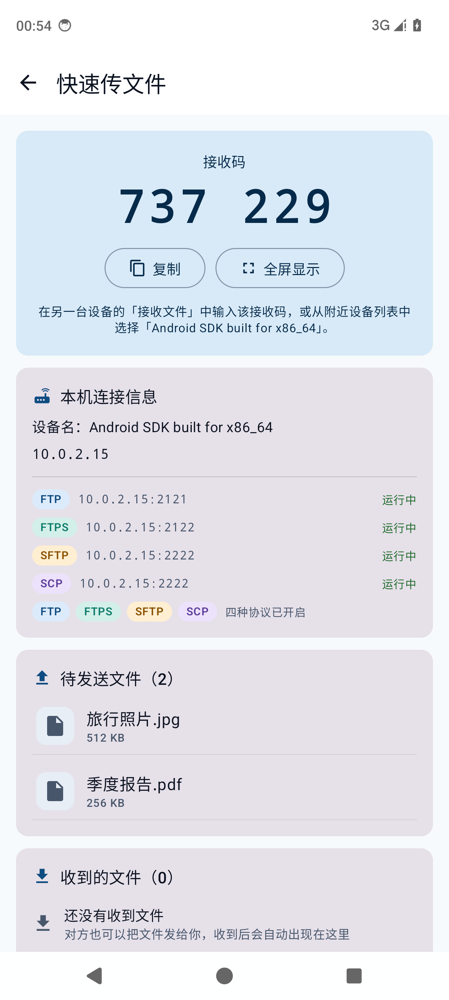
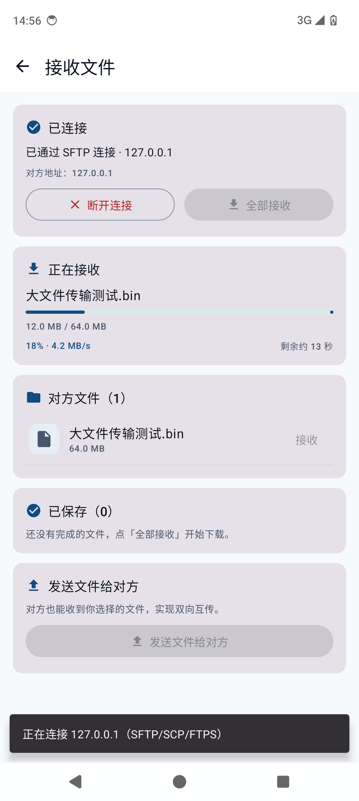
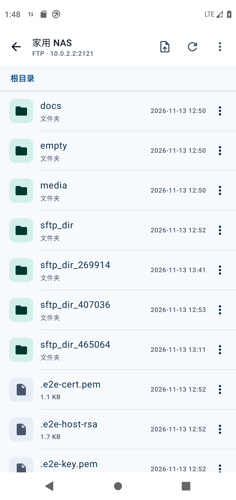
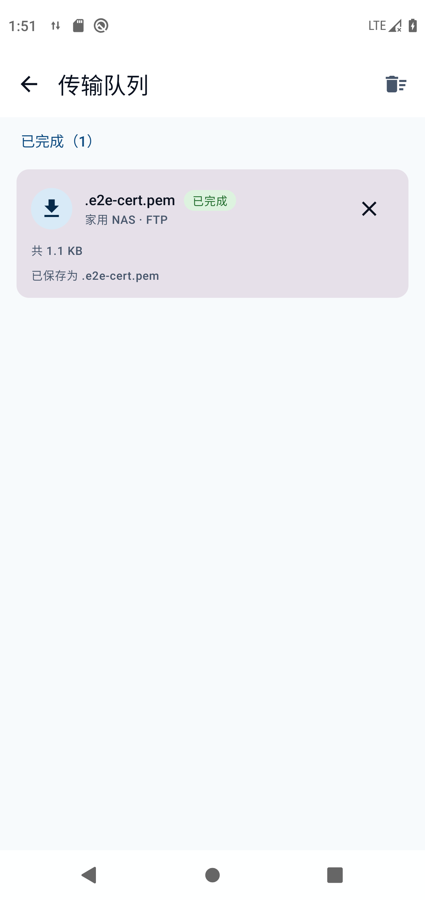
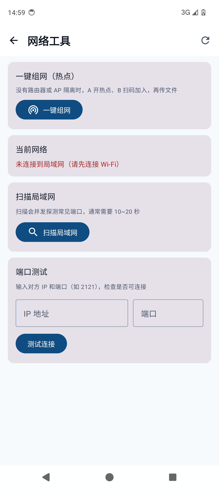
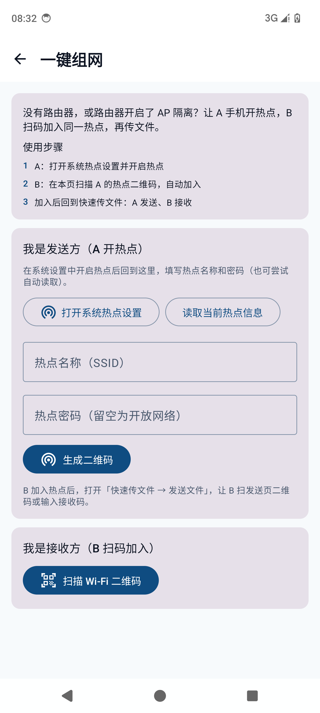
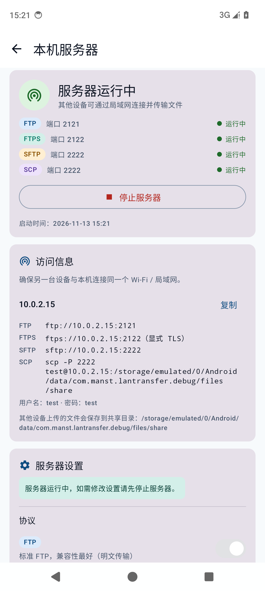
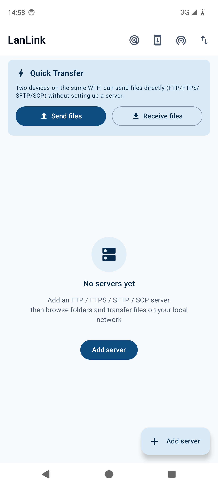
DOWNLOAD
从 GitHub Releases 获取最新版；如果 GitHub 访问不便，可使用蓝奏云备用下载。
系统要求：Android 10（API 29）及以上。安装包使用同一签名证书，可直接覆盖升级。
RELEASES
通过 GitHub 公共 API 实时读取；按发布时间排序。
FAQ
路由器可能开启了 AP 隔离/客户端隔离。可以先用「网络工具 → 扫描局域网」诊断；如果提示疑似 AP 隔离，可关闭路由器的隔离设置，或使用「一键组网」：一台开热点、另一台扫码加入后再传。
在系统设置中允许当前浏览器/文件管理器安装应用即可；这是 Android 对非商店安装包的安全限制。LanLink 的 Release APK 已签名，SHA-256 校验值见版本说明。
应用内更新是 v2.2.0 才加入的功能，v2.1.1 及更早版本没有更新代码，因此需要手动安装一次 v2.2.0；之后的版本会正常收到更新提示。
这些渠道分发的版本关闭了应用内更新，更新由 F-Droid 客户端（或 IzzyOnDroid 源）推送。如果你更喜欢在 App 内直接更新，请改为从 GitHub Releases 或 Gitee Release 下载正式版——两者使用同一签名，可直接覆盖安装并保留数据。
不需要互联网，只需要两台设备在同一局域网（或同一热点）。LanLink 不上传文件到云端，也不要求登录账号。
客户端支持 FTP、FTPS、SFTP、SCP；本机服务器同样四种协议都支持。SCP 不支持断点续传，其他三种支持。
GitHub：likebe1-1/lan-transfer-android。欢迎提交 Issue 与 PR。